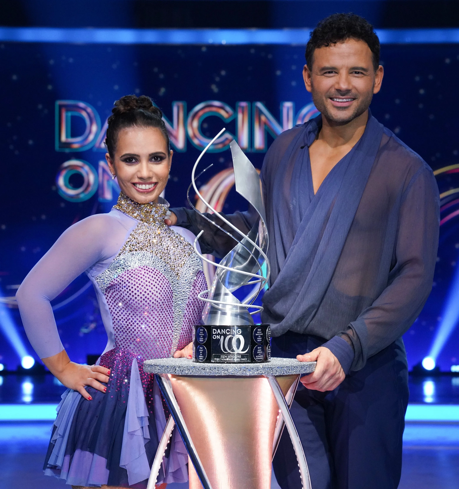

As the curtains close on another thrilling season of Dream Star, it's time to throw the spotlight on the new champion, Anjalee Herath,
who dazzled audiences and judges alike with their extraordinary talent and charisma. Winning DreamStar Season 3 is no small feat,
and Anjalee's journey to the top has been both inspiring and remarkable.
The grand finale was nothing short of spectacular, with Anjalee delivering what many have called a "defining" performance.
Performing "Sansarini Song", they not only showcased their vocal prowess but also their ability to command the stage,
a quality that undoubtedly tipped the scales in their favor

As the curtains close on another thrilling season of Swiftly Come Dancing, it's time to throw the spotlight on the new champion, Anjalee Herath,
who dazzled audiences and judges alike with their extraordinary talent and charisma. Winning Swiftly Come Dancing Season 3 is no small feat,
and Anjalee's journey to the top has been both inspiring and remarkable.
The grand finale was nothing short of spectacular, with Tikiri Manika delivering what many have called a "defining" performance.
Performing "Sansarini Song", they not only showcased their vocal prowess but also their ability to command the stage,
a quality that undoubtedly tipped the scales in their favor